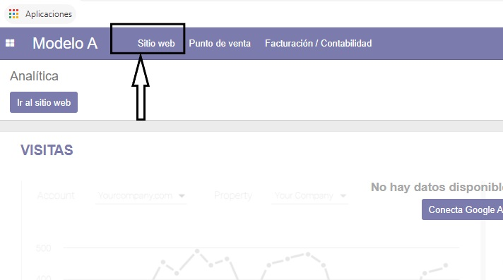
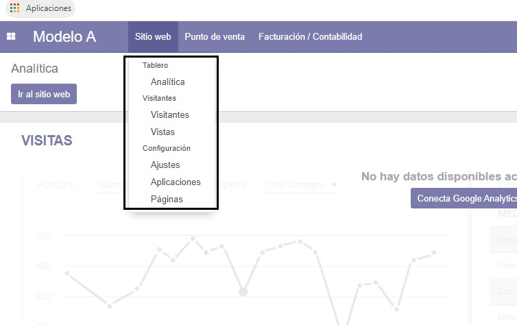
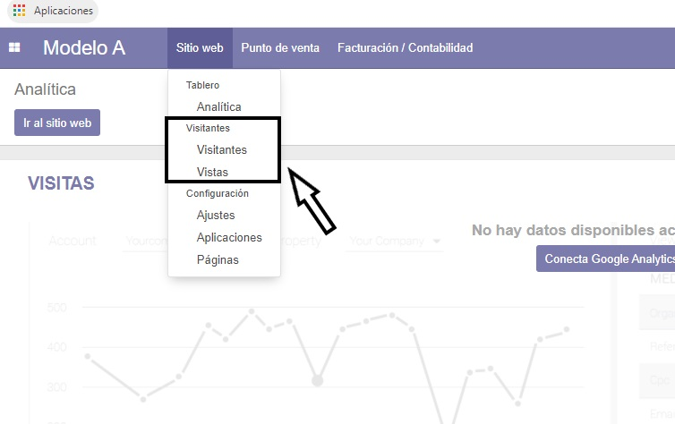
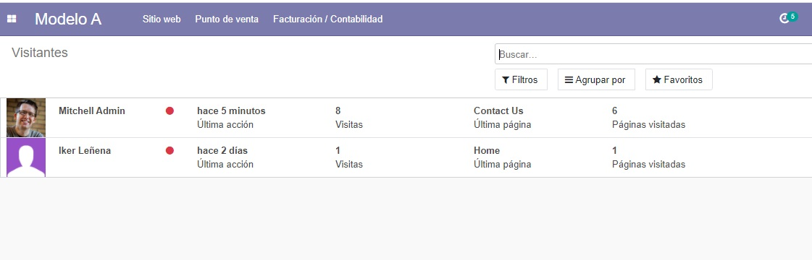
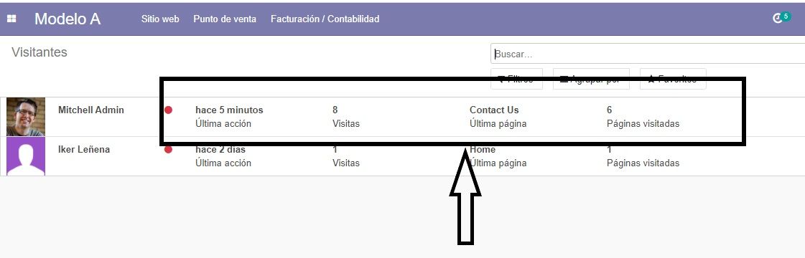
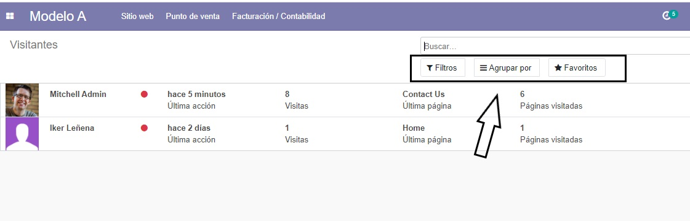
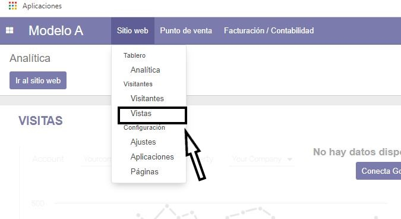
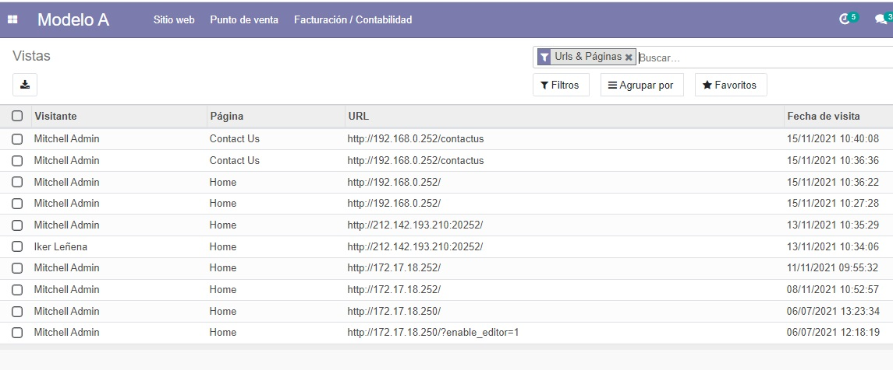
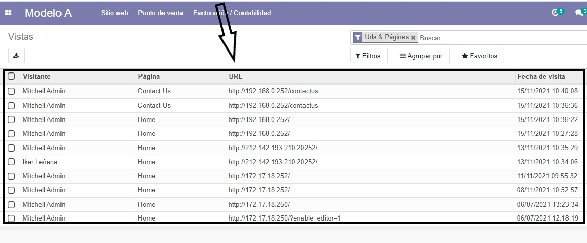
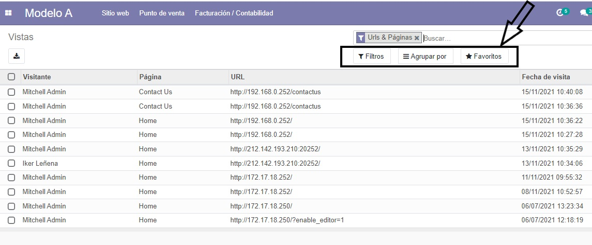

Acceso inicial al sistema
El primer paso para poder rastrear el tráfico que hay en nuestro sitio web debemos partir de la página principal. Una vez nos encontramos en la página que se observa en la imagen, debemos posicionar el ratón en el apartado que pone "Sitio Web" (tal y como vemos en la imagen).

Menú desplegable Sitio Web
A continuación nos pincharemos en el apartado de "Sitio Web" donde nos saldrá un desplegable. En este desplegable podremos observar que hay distintos apartados (como se ve en la imagen).

Opciones de análisis
Una vez abrimos el desplegable, podremos observar que en el apartado de visitantes tenemos dos opciones principales:
- Visitantes: Información sobre usuarios únicos
- Vistas: Información sobre páginas visitadas
Con estas dos opciones veremos la frecuencia con la que visitan la página y así sabremos el tráfico de visitas en nuestra página web.

Análisis de visitantes
Una vez tenemos en pantalla las opciones ya mencionadas, vamos a empezar clicando en "Visitantes" tal y como vemos en la imagen.

Esta es la página que veremos en pantalla cuando clicamos en el apartado visitantes.

Información detallada de visitantes
En este apartado se pueden ver los visitantes que tiene la página con los respectivos datos de estos.

Datos que se recopilan:
- Última conexión: Fecha y hora exacta desde la última entrada
- Número de visitas: Total de visitas realizadas
- Páginas específicas: Qué páginas ha visitado
- Número de páginas: Cantidad total de páginas visitadas
Herramientas de filtrado
Estas son las opciones que ofrece la página para filtrar la búsqueda en función de nuestros requisitos y agrupar o marcar como favoritos elementos en nuestro registro (donde marca la imagen).

Análisis de vistas
Ahora volveremos al panel de inicio y realizaremos los pasos ya mencionados para situarnos en el apartado de "Vistas" (donde vemos en pantalla).


En este apartado como se puede observar nos informa de qué usuario entra a qué página y a qué hora y qué día. "Vistas" ofrece una información parecida a la que nos ofrece el apartado "Visitantes" pero enfocada a las visitas en vez de al visitante o usuario.
Datos de las vistas
Esta es la parte en la que se reflejan los datos de las visitas:
- Hora en la que se ha visitado la página
- Usuario que realizó la visita
- Página específica visitada

Opciones de gestión
En este apartado podemos observar que tenemos las opciones que ya hemos visto anteriormente en "Visitantes":
- Filtro: Según requisitos específicos
- Agrupar: Elementos de la página según los requisitos que precisemos
- Favoritos: Marcar información destacada

Resumen
Con estas herramientas podrás monitorear efectivamente:
- Tráfico de visitantes únicos
- Patrones de navegación
- Páginas más populares
- Horarios de mayor actividad
- Comportamiento de usuarios recurrentes